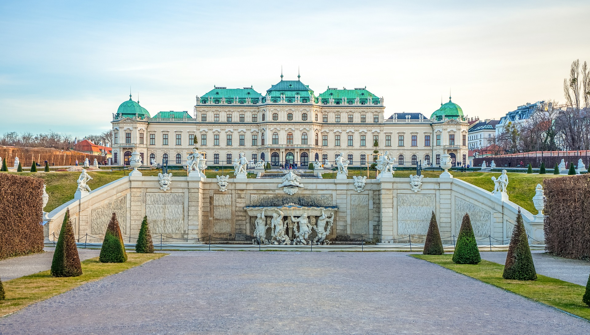
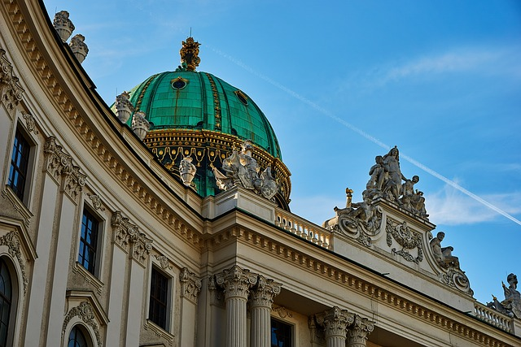
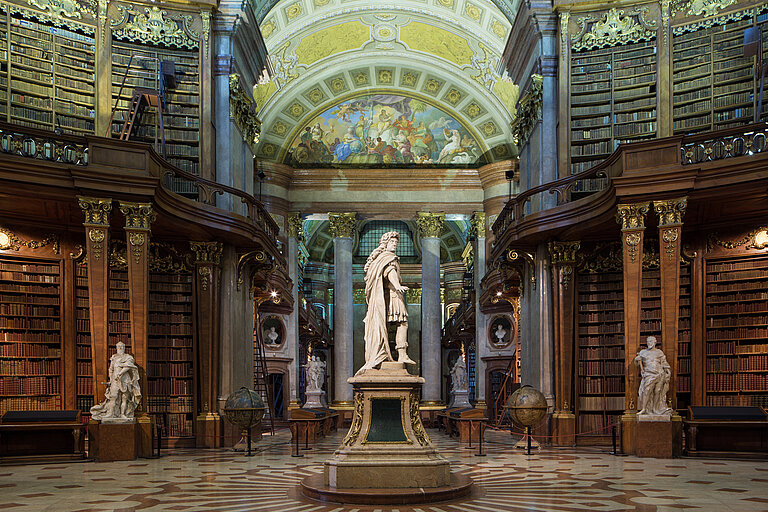
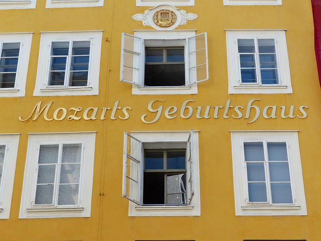
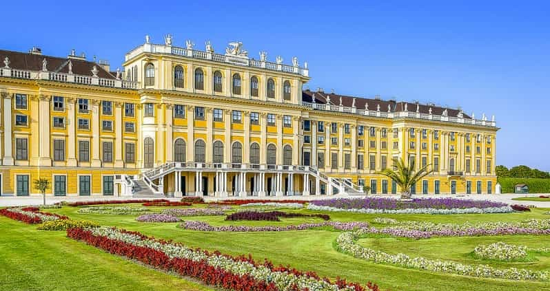

If you love this city click on the heart!

Discover Vienna

Hofburg Palace
The former imperial palace, now housing several museums, the Imperial Chapel, and the offices of the President of Austria.

Austrian National Library
One of the world’s most beautiful libraries, renowned for its impressive Baroque architecture, vast collection of books.

Mozart's Residence
Visit the Mozarthaus Vienna, where Wolfgang Amadeus Mozart lived and composed some of his most famous works.

Schönbrunn Palace
A magnificent Baroque palace with opulent rooms, extensive gardens, and a history as the summer residence of the Habsburgs.